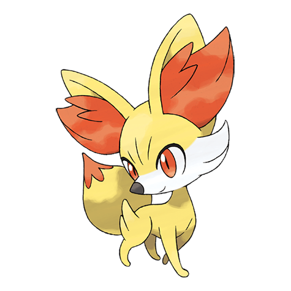
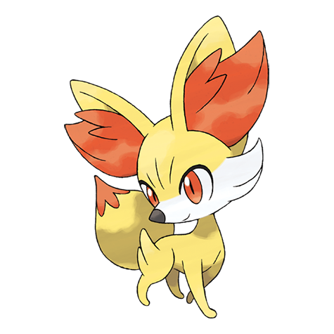

POKECHOICHE
POKECHOICHE
 POKECHOICHE
POKECHOICHE

Es una region sitúada al este de Johto y al sur de Snnoh. Ademas de que el profesor Oak en esta region inicial mente nos ofrece 3 pokemones para iniciar la aventura, Los cuales son:


Es una region situada al oeste de Kanto, esta tambien comparte la misma liga pokemon con Kanto. En esta region tras obtener la Pokedex el profesor Elm nos afrece tres tipos de pokemon a legir los cuales son Pokemon oro, PLata y Cristal:


Es la region en donde se desarolla la trama pokemon Rubi, Zafiro y Esmeralda. En esta region se encuentran los pokemon Rubi, Zafiro Esmeralda, Rubi omega y Zafiro Alfa. Todo entrenador pokemon que decida incia una aventura en esta region tiene la opcion de elegir entre los siguientes tres pokemon:


Esta region se encuentra al norte de Kanto. tambien es una de las regiones mas grandes. En esta region se pueden encontran los pokemon tipo Diamante, Perla y Platino. Ademas que depues de realizar una mision para el profesor serval, este nor ofresera elegir entre los sigientes pokemo's de esta region:

Es la region es donde se desarrola la trama de Pokemon negro y Blanco. En esta region se puden encontrar los pokemons tipo Negro, Blanco, Negro 2 y Blanco 2. En donde incial mente la profesora Encina no ofrese un regalo en el cual podremos elegir uno de los siguientes pokemon's:


En esta region se caracteriza por tener la mayor variedad mas amplia de especies pokemon por lo cual su pokedex region los divide en tres partes: Kalos Centro, Kalos Costa y Kalos Montaña. Al iniciar en esta region Profesor Cipres nos hara envio de 3 pokemon's con Benigno de los cuales podremos elegir uno de ellos:
 


Esta region esta compuesta por cuatro islas naturales: Melemele, Akala, Ula Ula y Poni ademas de una pequeña isla artificial: El paraiso Aether. En esta region podremos encontrar los pokemom's tipo sol y luna. Al iniciar en esta region Kaudan no dara la opcion de elegir uno des lo siguientes pokemon's:


Es una region bastante caracterizada por sus cultura ya que yace en gran medida en el combate pokemon. En esta region encontraremos especies pokemons varias y de tambien de otras regiones. AL inicia en esta region Lionel nos dara las opcion de elegir uno de los siguientes pokemon's:


Esta region presenta una gran cantidad de climas muy variados pero normalmente prodominan las heladas. Tambien se caracteriza por tener un gran cantidad de accidentes geograficos, En esta region tambien podremos encontrar pokemon's variados de las demas regiones. Ademas en esta region no ofrecen 3 pokemon's inciales de los cuales se desconoce quien no los ofrece, los cuales son los siguientes: